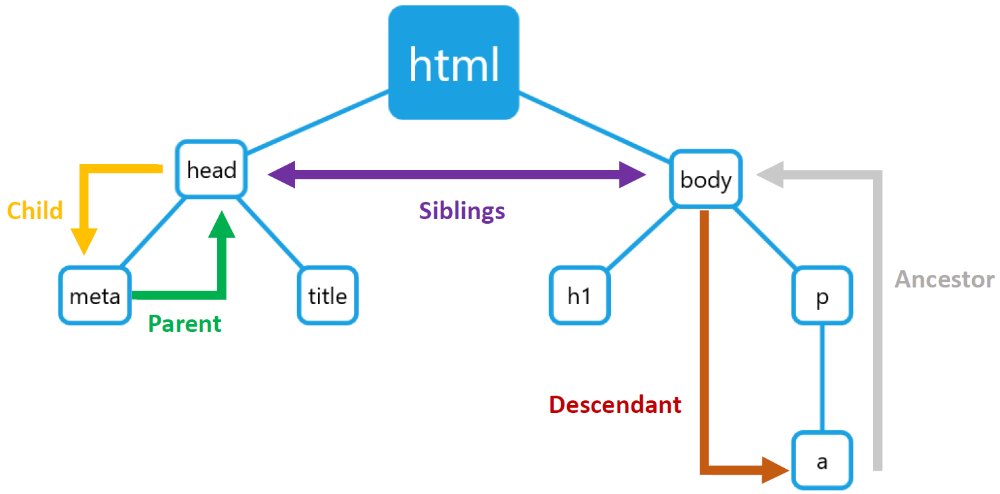

Introduction aux technologies du web (CO 2020)
Mattia A. Fritz
TECFA, Université de Genève
Difficultés pour l'enseignement
Se trouver entre deux systèmes computationnels complexes et distincts, en plus distribués !
")
Différents parcours possibles

Fonctionnement d'Internet
Internet est un réseau de dispositifs qui échangent de l'information/des données.
À l'image, une vue partielle de internet en 2005. Chaque ligne connecte deux adresses IP.

{kind=link}
Le World Wide Web
Le Web est une manière d'échanger des informations basée sur 3 éléments principaux :
- URL (adresse web)
- Protocole HTTP
- HyperText Mark-up Language (HTML)
Première page web

Apparence dans le navigateur (gauche) et code source HTML (droite) de la première page web publiée par le CERN en 1990.
Example de code HTML5
HTML5 est la cinquème version de HTML, caractérisée par l'entête à la ligne 1 du code suivant :
<!DOCTYPE html>
<html lang="fr">
<head>
<meta charset="UTF-8">
<meta name="viewport" content="width=device-width, initial-scale=1.0">
<title>Document HTML5</title>
</head>
<body>
<h1>Je suis un document HTML5 !</h1>
</body>
</html>Langage de marquage
HTML5 utilise une notation par balises, ou tags en anglais, qui consiste à contourner le contenu textuel avec des éléments qui en qualifie la nature.
Ceci est le texte d'un paragraphe.
Titre de niveaux 1
Lien vers EduTechWikiCombiner les éléments
Le langage est de nature combinatoire. On peut embôiter les éléments.
Si vous êtes intéressé-e-s par la technologie éducative,
vous devez absolument visiter
EduTechWiki
au plus vite !
Un lien hypertextuel qui permet de passer d'une page à l'autre est inséré à l'intérieur d'un paragraphe.
Termes techniques
Pour pouvoir identifier les différents éléments dans un langage de marquage, on utilise des termes techniques illustrés à l'image.

Références externes
Les éléments multimédia (images, vidéos, ...) sont incorporés par référence. Ils doivent disposer de leur propre addresse web (URL).
<img src="my-photo.jpg" alt="Ma photo" title="Me voici !" />
<img src="https://mafritz.ch/slides/fr/intro-html5/images/html5-logo.svg" alt="HTML5 Logo" title="Logo de HTML5" />
Il faut avoir le droit d'utiliser et/ou pointer vers les éléments externes !
Comment s'affiche une page ?
Le navigateur télécharge le code source de la page et tous les éléments externes.

Deux fonctions du browser
Le navigateur web effectue deux opérations avec le code source HTML5 :
- Parsing : création du DOM à travers la hiérarchie des balises.
- Rendering : application des propriétés graphiques aux éléments du DOM.
Parsing : relation entre éléments
La relation entre noeuds influence l'affichage d'un élément par rapport à un autre (e.g. embôitement dans le DOM)
Rendering : tout est une boîte

Tout élément HTML5 est une sorte de boîte rectangulaire. À l'image, une bordure rouge est appliquée à tout élément.
Types de boîtes différents
Il existe ~3 types de boîtes :
- Block : l'élément occupe la largeur disponible.
- Inline : l'élément occupe seulement la place nécessaire à son contenu.
- None : l'élément n'occupe pas de place physique.

<h1> et <p> sont des
éléments block qui occupent toute la largeur
disponible indépendamment du contenu.
<a> est un élément inline qui
occupe seulement la place nécessaire et peut même aller à la
ligne avec du contenu sur les deux côtés.
<head> est un élément none, on ne
le voit pas.
CSS = propriétés des boîtes
CSS est un langage qui permet de déterminer les propriétés graphiques des éléments HTML5. Il s'occupe de :
- Identifier les éléments à styliser avec un sélecteur
- Déclarer une ou plusieurs propriétés à modifier
- Spécifier les valeurs à appliquer parmi les choix possibles

Exemple d'un sélecteur avec trois propriétés. Les {} délimitent un bloc de code.
Composantes des pages web

JavaScript et le navigateur web
<!DOCTYPE html>
<html lang="fr">
<head>
<title>Une page HTML5</title>
<meta charset="UTF-8">
<!-- Téléchargement du CSS -->
<link href="assets/css/style.css" rel="stylesheet">
</head>
<body>
<!-- Téléchargement du fichier JS -->
<script src="assets/js/app.js"></script>
</body>
</html>
Les instructions sont téléchargées avec la page.
Un moteur JS dans le navigateur
Le code est interprété à l'intérieur du navigateur.
L'objet global window
window.
- Ouvrez la console du navigateur F12
-
Entrez
window -
Après entrez
window.innerHeight -
Enfin entrez
window.location.href
Accès au DOM de la page
window.document qui donne accès au
DOM.
-
Entrez
window.documentdans la console -
Puis seulement
document -
Maintenant entrez
document.title -
Et enfin
document.body
Manipulation du DOM
-
Entrez
document.getElementById('slideTitle').innerHTML -
Puis
document.getElementById('slideTitle').innerHTML = 'On peut faire mieux !'
Instructions pour la présentation
- Entrez
Revealdans la console -
Puis entrez
Reveal.getTotalSlides() -
Et finalement entrez
Reveal.next()
Facile, n'est-ce pas ?
Maintenant regardez le code HTML du bouton.
<button onclick="Reveal.next()">Prochaine slide</button>Que ce passe-t-il si vous cliquez ?
Voilà !
Les applications interactives sont une extension de ce mécanisme de base :
- Les instructions sont codées en amont et téléchargées avec la page
- Elles sont ensuite déclenchées par des événements, comme par exemple le clique sur un bouton
Gestionnaire d'événements
Comme pour CSS, on peut ajouter du code en dehors des balises HTML5 en utilisant, par exemple, un event listener.
<button id="nextSlideBtn">Prochaine slide</button>
// Code JavaScript
document.
getElementById("nextSlideBtn").
addEventListener("click", function() {
Reveal.next();
});
On identifie le bouton dans le DOM et on détermine l'action à déclencher lors de l'événement click
Autres événements
Insérez un mot pour voir l'équivalent en code binaire.
Événement keyup
Autres éléments interactifs
Cliquez sur les parties du visage pour voir le nom en anglais.
Pour aller plus loin
Les slides de cette présentation sont tirés depuis trois présentations plus approfondies sur chaque technologie :
Merci pour votre attention !
Présentation créée avec
Reveal.js.